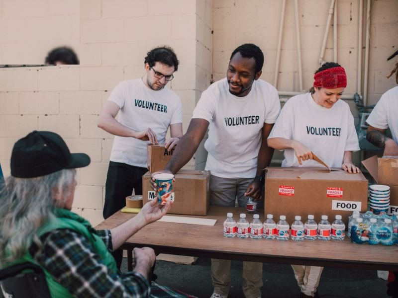

About GreenLeaf

GreenLeaf Community Food Bank is a volunteer-run non-profit organisation that collects, sorts, and distributes food donations to low-income families and individuals facing food insecurity in our local area. We started as a small group coordinating through a WhatsApp group and word-of-mouth, and have since grown into a network of volunteers, donors, and community partners.
Our work is guided by one simple belief: no one in our community should go hungry, and everyone deserves dignity when asking for help.
Our mission
To reduce food insecurity in our local community by rescuing surplus food, collecting donations, and distributing them efficiently and with dignity to the people who need them most.
Our vision
A community where every family has reliable access to enough nutritious food, and where surplus food is shared rather than wasted.
Our values
- Dignity - everyone who receives help is treated with respect.
- Transparency - we publish how donations are used.
- Community - we rely on and invest in local volunteers and partners.
- Reliability - our distribution schedule stays consistent so families can count on us.
How we started
GreenLeaf began with a small group of neighbours sharing surplus food over a WhatsApp group. As demand grew, so did the need for a proper distribution schedule, a way to list urgent needs, and a way for local businesses to arrange recurring donations. This website was built to give GreenLeaf that central home online.
Our team
GreenLeaf is run entirely by community volunteers, coordinated by a small committee that manages the depot, distribution schedule, and donor relationships.
- Depot & logistics coordination
- Volunteer scheduling
- Donor & business partnerships
- Soup kitchen team leads